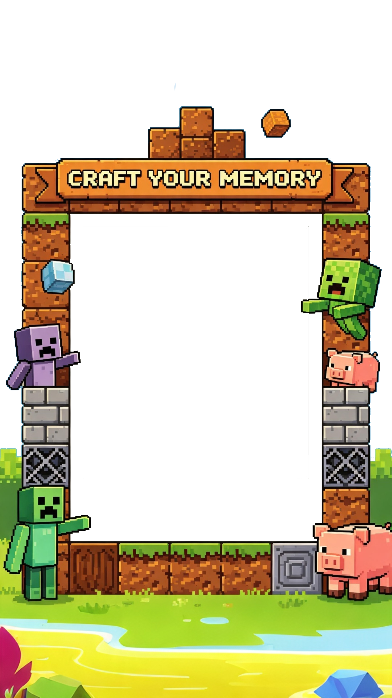
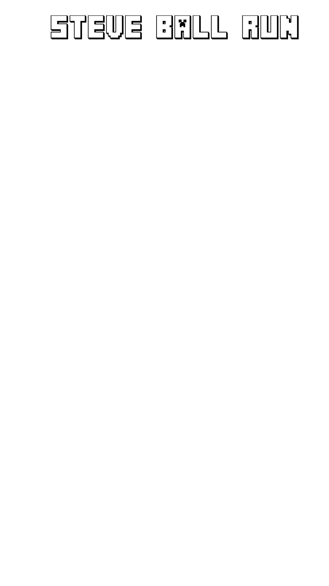
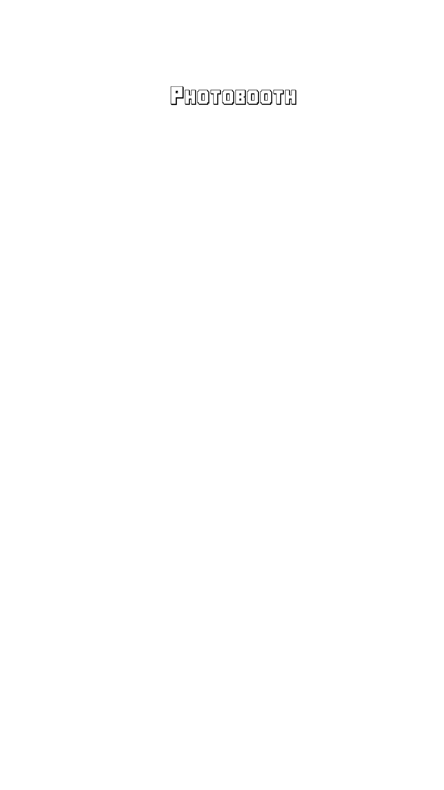

STEVE BALL RUN
MINECRAFT PHOTOBOOTH
Team Steve — Rube Goldberg Project
tap to begin
Bago mo kalabitin ang syringe, siguraduhing tama ang posisyon ng mga gamit. Kung umilaw ang End Crystal, ibig sabihin ay sablay ang setup — paki-tawag agad ang Staff!
🟢 LIGHT OFF → Maayos ang setup, pwede nang magpatuloy.
🔴 LIGHT ON → May sablay, tumawag agad ng Staff.
Piliin mo na ang paborito mong Minecraft frame para hindi mukhang ewan ang litrato mo. Dali na, pumili ka na!
Hawakan na ang syringe at hilahin para bumagsak ang bola! At tandaan: tumingin sa camera at mag-pose kapag umilaw na ang End Crystal!
Pagkatapos hilahin, bitawan na at huwag nang galawin ang machine.
👀 Panoorin ang End Crystal — 'yan ang senyales para mag-pose!



Ginagawa ang QR...